整体结构
- 术语解释
- 功能介绍
- 系统界面及操作
术语与缩写解释
-
热带气旋（tropical cyclone）：生成于热带或副热带洋面上，具有有组织的对流和确定的气旋性环流的非锋面性涡旋的统称，包括热带低压、热带风暴、强热带风暴、台风、强台风和超强台风；
-
风力等级（wind scale）：根据风对地面（或海面）物体影响程度而定出的等级，用来估计风速的大小；
-
平均风速（mean wind speed）：在给定的某一段时间内的风速的平均值；
-
热带气旋强度（tropical cyclone intensity）：热带气旋底层（近地面或近海面，下同）中心附近的最大平均风速或最低海平面气压；
-
最大风力（maximum wind）：在给定的某一时段内或某一期间内热带气旋底层中心附近所出现的平均风速的最大值；
-
超强台风（super typhoon）：底层中心附近最大平均风速≥51.0 米/秒，也即16级或以上；
-
强台风（severe typhoon）：底层中心附近最大平均风速41.5-50.9米/秒，也即14-15级；
-
台风（typhoon）：底层中心附近最大平均风速32.7-41.4米/秒，也即12-13 级；
-
强热带风暴（severe tropical storm）：底层中心附近最大平均风速24.5-32.6 米/秒，也即风力10-11 级。
-
热带风暴（tropical storm）：底层中心附近最大平均风速17.2-24.4 米/秒，也即风力8-9 级；
-
热带低压（tropical depression）：底层中心附近最大平均风速10.8-17.1 米/秒，也即风力为6-7 级；
软件功能介绍
-
功能
本系统提供多种查询方式，实现按台风名称查询、按时间段查询、按空间范围查询以及风电场历史台风信息查询，并显示台风路径、台风出现频率、台风中心最大风速等功能。
-
性能
实时解码并处理中央台路径预报、日本主观路径预报、美国客观预报等多种预报数据。
客户端软件界面风格友好、操作集中，无须频繁界面切换。
访问的安全保证性，防止外界或内部用户的非法或恶意访问。为此，从访问级别上严格控制不同用户的权限，避免用户越权使用或非法使用系统资源。
系统界面与基本操作
-
系统主界面
浏览器输入登陆地址：http://54.223.223.73:8080 非登陆状态，只能显示台风路径不能进行查询检索操作。
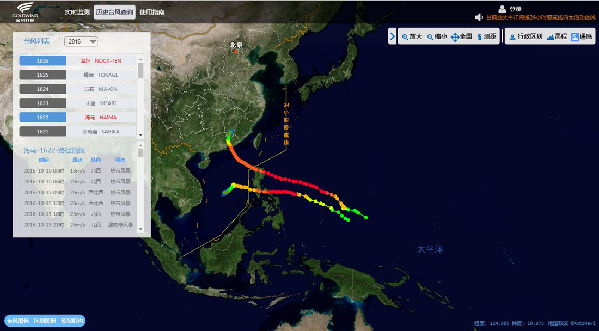
浏览器输入登陆地址：http://54.223.223.73:8080/authc/login，输入，用户名密码登陆。
浏览器输入注册地址：http://54.223.223.73:8080/register.html，输入，用户名及密码，确认密码，即可注册。
-
GIS功能
GIS底图应包含当前主流WEB地图基本信息（高德），各种地图基本信息可由用户自由选择是否显示；支持高程地形地图、行政区图、遥感影像三种显示方式，支持自由缩放、平移，缩放通过GIS界面缩放按钮、滚动条实现，可通过鼠标滚动进行放大缩小。
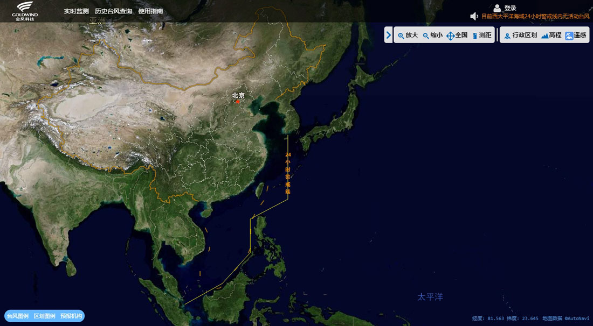
图1-遥感影像地图显示
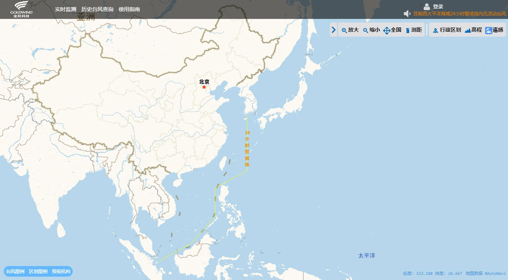
图2-行政区划地图显示
-
台风实时监测
用户登录后，若此时台风进入24小时警戒线，启动台风实时监控，当距离金风沿海风电场500km时，根据台风当前位置和强度查询相似台风路径，查询的移动速度，登陆时的最大风速、最低气压等信息。
操作步骤：
-
点击“实时监测”：显示最新台风路径信息，当台风进入24小时警戒线后右上角会显示提示文字，以红字警示(台风已进入二十四小时警戒线，请做好台风防护准备)
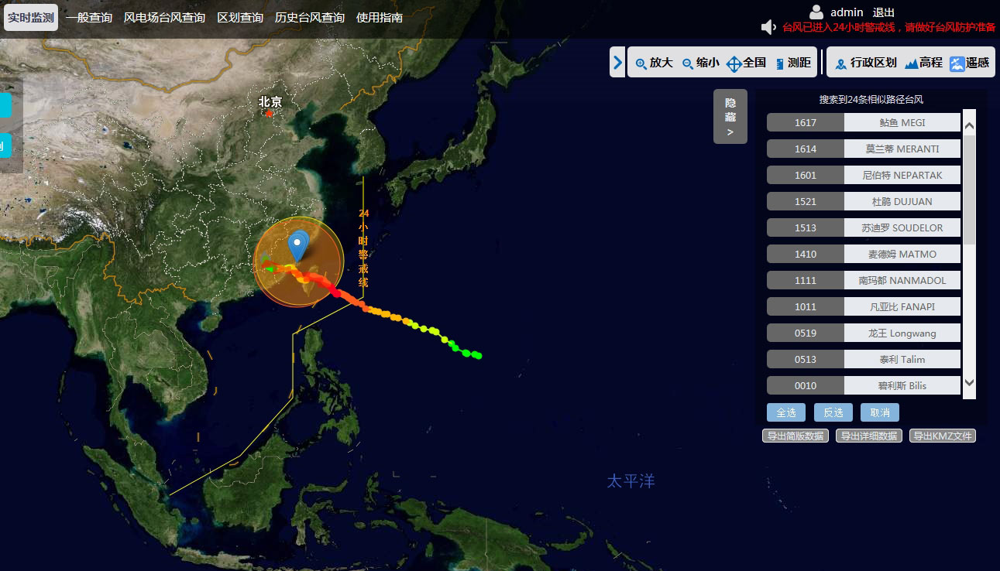
-
点击相似路径台风：显示历史上相似台风列表；
-
选择台风，显示台风路径信息及台风路径点。
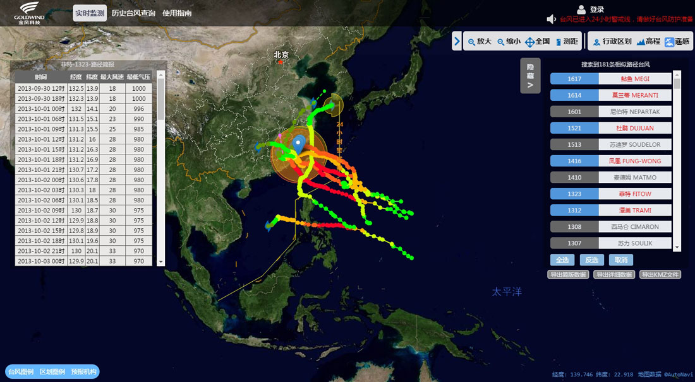
图3-台风实况监测
-
-
台风实时路径显示
当年查询得到的台风为当年台风（未进行历史整编）情况下，显示台风实况路径及预报。
台风实况路径预报显示，目前显示预报中心：
国家气象中心实时预报：预报中心为BABJ，预报方法为BABJWTPQ
日本72小时综合预报：预报中心为RJTD，预报方法为RJTDSUBJ
美国综合预报：预报中心为PGTW，预报方法为PGTWSUBJ
操作步骤：
-
选择当年台风，如一般查询中选择编号“1626”台风；
-
在列表中选择台风路径点，叠加当前实况点台风路径预报，如图所示。
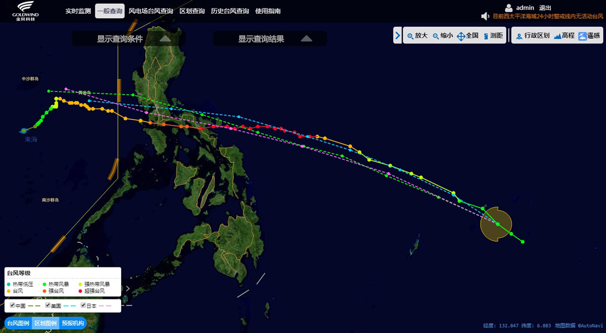
-
鼠标经过台风实况点，详细信息显示
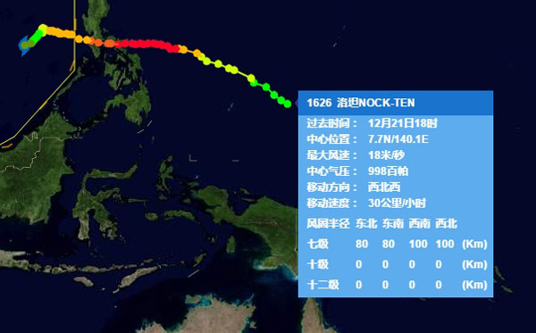
-
-
历史台风列表
按年显示1949年至今台风路径的信息，操作步骤：
-
点击历史台风查询；
-
台风列表中选择年份；
-
显示当年台风，选择台风列表，叠加显示台风路径信息及台风详情。
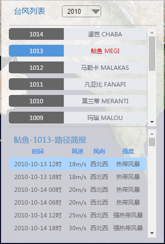
-
点击台风叠加GIS显示路径信息：
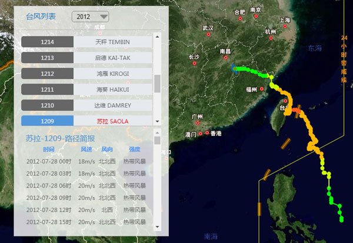
-
-
台风编号查询
查询1949年至今台风路径的信息，输入台风编号（国内、国际），支持多个台风编号查询，不同查询条件用空格或分号隔开，查询结果默认叠加GIS显示，可以导出查询信息，可保存为.xls文件。操作步骤：
-
“一般查询”中选择，“编号查询”，输入台风编号不同编号用分号隔开，如图：
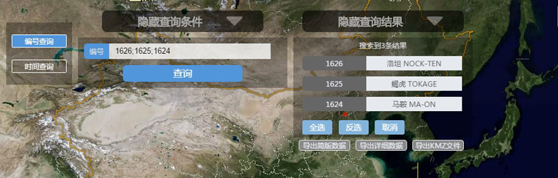
-
在查询结果选择一条台风，显示路径信息列表：
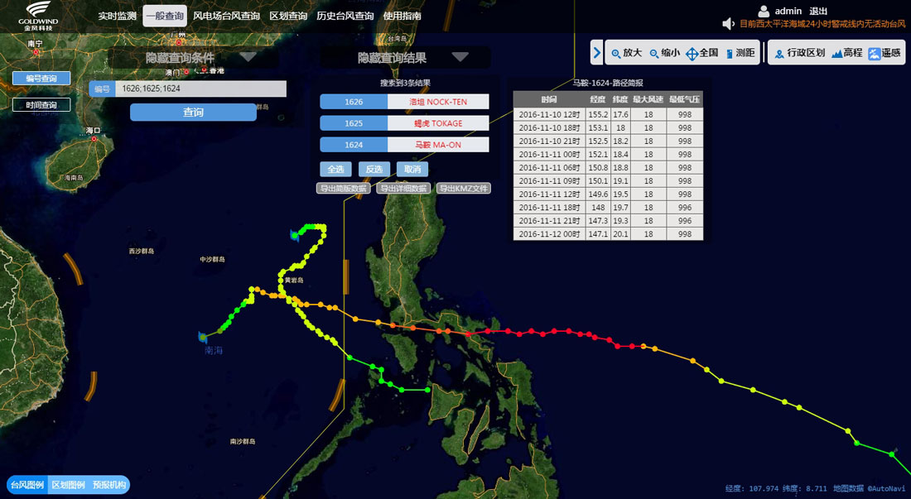
-
台风详情列表中选择“路径信息导出”：
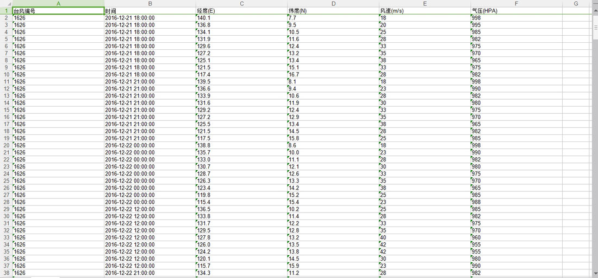
-
-
台风时间查询
以时间为条件查询1949年至今台风路径信息，包括时间点，查询结果默认叠加GIS显示，可以导出查询信息，可保存为.xls文件和.kmz文件。 操作步骤：
-
“一般查询”中选择“时间查询”，输入查询条件；
-
在查询结果选择一条台风，显示路径信息列表：
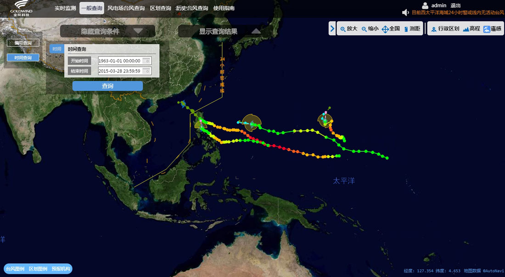
-
-
台风登陆查询
登陆地点查询包括单点、多点以及分省、分市区，登陆强度包括台风过程强度及台风登陆前强度。查询结果默认叠加GIS显示，可以导出查询信息，可保存为.xls文件和.kmz文件。操作步骤：
-
“一般查询”中选择“登陆查询”，输入查询条件；
-
在查询结果选择台风，显示路径信息列表：
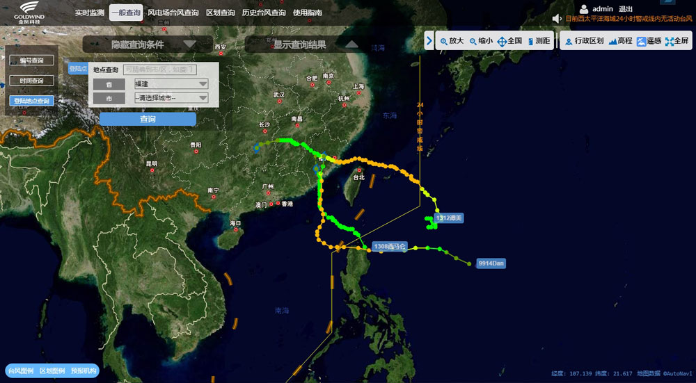
-
-
风电场台风查询
选择风电场中心距离（默认0.5°）和时间段，点击查询按钮。查询结果默认叠加GIS显示，可以导出查询信息，可保存为.xls文件和.kmz文件。操作步骤：
-
选择“风电场查询”，输入查询条件；
-
在查询结果选择一条台风，显示路径信息列表：
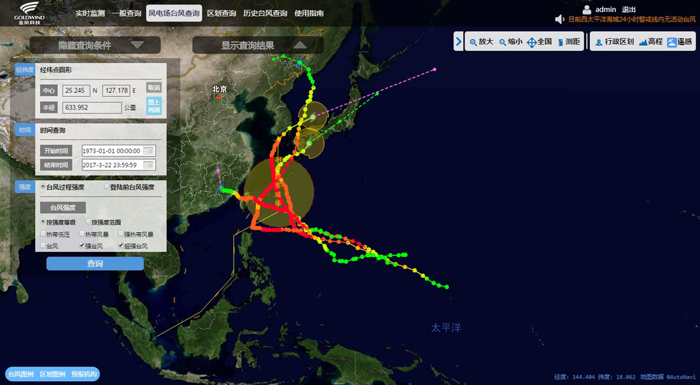
-
在查询结果中增加统计结果导出功能，当台风进入选定的中心范围时，导出范围中的台风信息，具体信息有：台风编号，经纬度，强度，最近距离（中心点到台风路径的最近距离），强度（经过区域的实况点最大强度）。
-
-
台风区划查询
中国东南沿海五省(广西、海南、广东、福建、浙江)离岸100公里范围（内陆侧）内的平均风速区划。沿海五省50年一遇最大风速区划。沿海五省50年一遇最大风速与平均风速比值区划。操作步骤：
-
选择“区划查询”→“沿海五省50年一遇最大风速区划”；
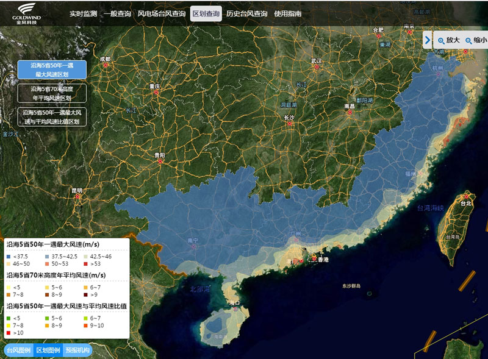
-
选择“区划查询”→“沿海五省70米高度平均风速区划”；
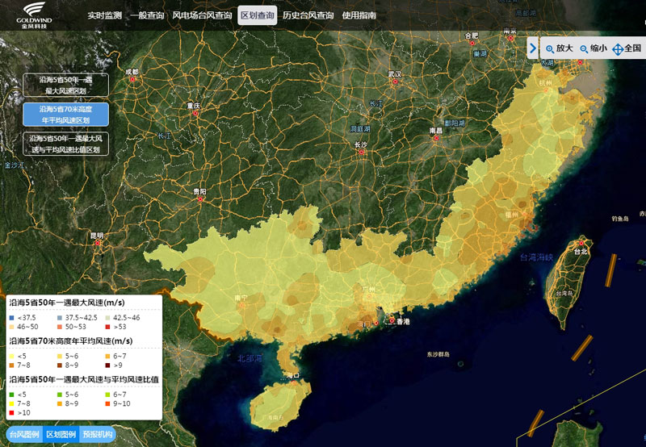
-
选择“区划查询”→“沿海五省50年一遇最大风速与平均风速比值”；
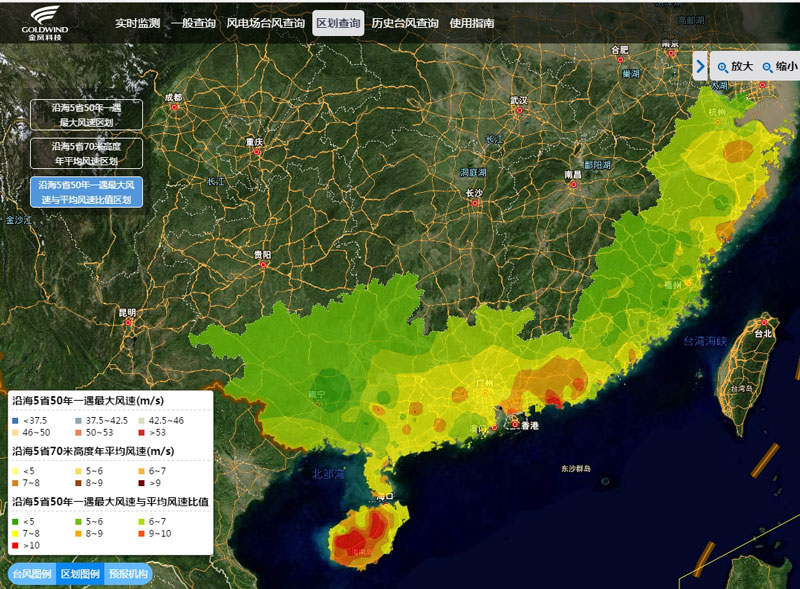
-
-
我的风电场
通过我的风电场进行风电场的展示以及添加。操作步骤：
-
点击我的风电场-风电场信息可以查看现有风电场；
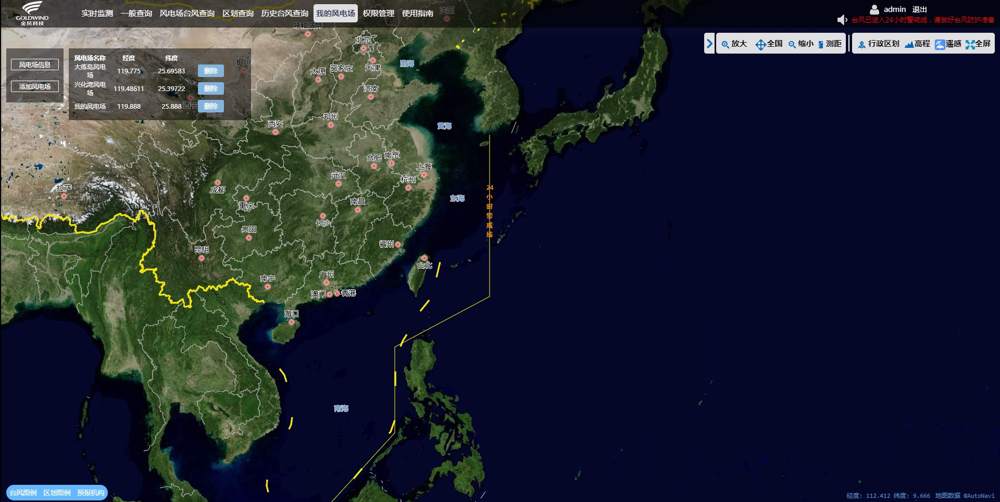
-
点击我的风电场-添加风电场进行风电场的添加；
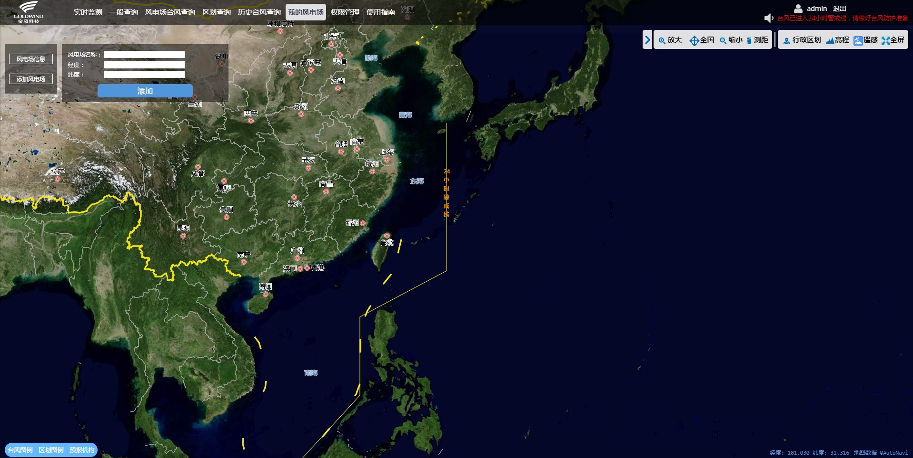
-